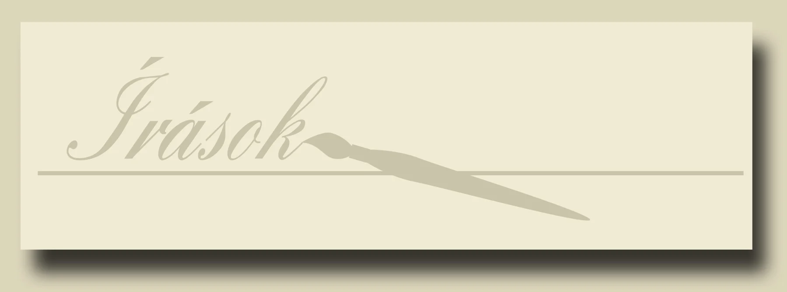
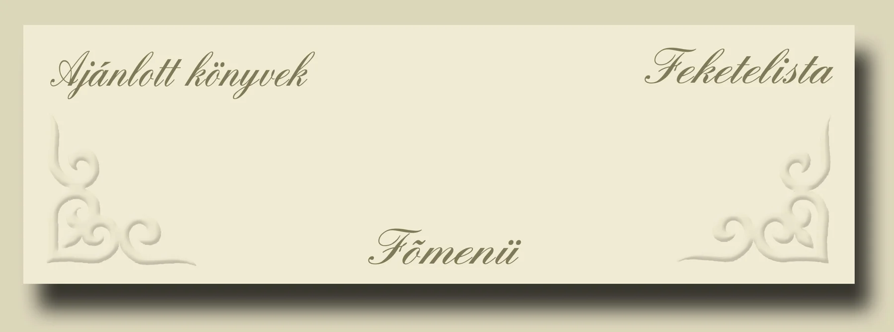

Sir Walter Gilbey, Bart. - Kislovak a hadviselésben, ford.: Dr. Szebényi Tibor
HUN-MAGYAR HARCMŰVÉSZET - Az íjászat hagyományos módszere, Kelemen Zsolt és alkotógárdája
KÖRNYEZETISMERET - egy korszerű környezetvédelmi előadás képes, szöveges (PPT) anyaga - Kelemen Zsolt
9 mm-es hadipisztoly szemben egy VI-VIII. századi "védőmellénnyel" - Lövésteszt lovasíjász vértre - Nagy Ákos zls. / HONVÉD ALTISZTI FOLYÓIRAT
